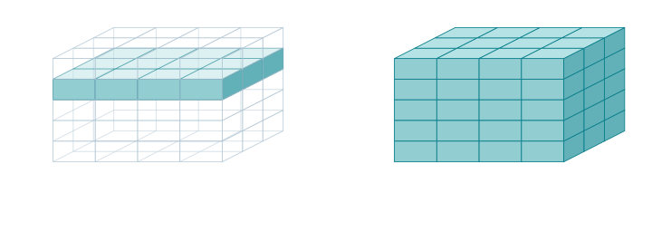
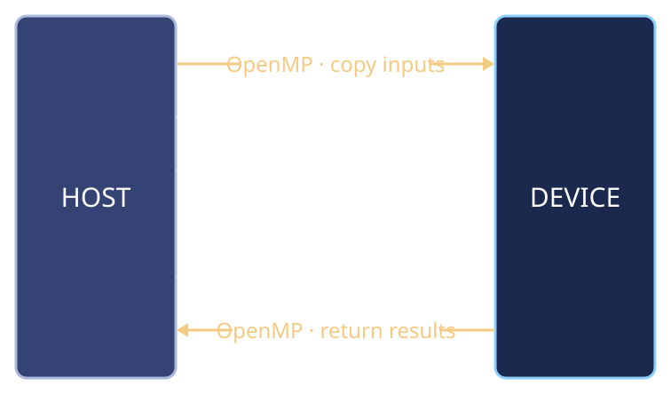
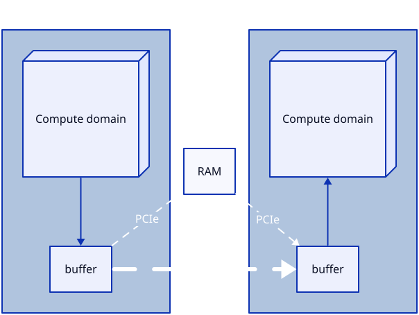
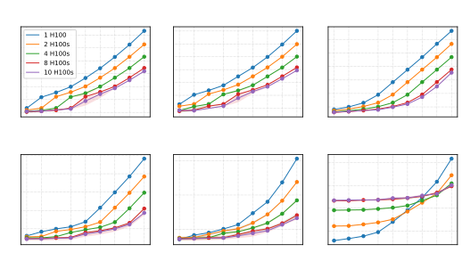

Blocking reconciles CPU and GPU

do concurrent expresses independence ;
the GPU compiler forms kernels .
Blocking chooses the work region — same solver, different
extents.
[4:30–5:30] Distinguish concurrency from a kernel. Fortran do
concurrent describes independent iterations, not a GPU launch. In our
GPU compilation path these loops also delimit work the compiler turns
into kernels; the exact mapping and kernel formation are compiler
decisions, not Fortran guarantees. We therefore introduce a
computational blocking layer to choose how much work is presented at
once. On CPUs we select cache-friendly parts, illustrated by a layer on
the left. On GPUs we expose a larger work region, illustrated by the
whole local domain on the right, and let the compiler map its
independent iterations onto GPU threads and thread blocks. Shading
denotes the work region, not concurrency in every dimension: ordered k
work can remain serial inside the kernel. The picture is an illustrative
contrast, not a requirement to launch the entire domain or a claim that
GPU hardware solves algorithmic dependencies. Computational blocks also
bound temporary storage and keep control flow outside compact kernels.
Runtime extents preserve the same solver and module API; these
algorithmic tiles are distinct from CUDA thread blocks.
Keep the data on the device
Fortran has no host/device model. OpenMP manages
transfers.

We rely on OpenMP–do concurrent
interoperability .
[6:45–7:45] So far we have deliberately left out data movement.
Exposing independent work and choosing useful blocks is not enough if
every kernel copies its fields back and forth. Standard Fortran has no
notion of host and device, and thus no means to explicitly control
transfers between them. Leaving that distinction outside the language is
a reasonable design choice, but we must supply this missing piece. We
use OpenMP target enter data and target exit data to manage the lifetime
shown here. Inputs use map(to: b, c), output storage uses map(alloc: a),
and exit uses map(from: a) and map(delete: b, c). Intermediate host
access, when needed, can use target update without ending residency.
Solid gold arrows show data transfers; dashed white arrows show
successive kernel launches, not copies of resident fields. Real model
timesteps contain thousands of kernels, so those transfers would be
devastating. Persistent fields are mapped during initialization and
retained on the GPU. Modules manage their own temporary storage. The
significant design decision is mixing OpenMP data management with do
concurrent kernels lowered through OpenACC in this toolchain. Those
kernels must resolve OpenMP-managed arrays to the same resident device
allocations. This interoperability is an explicit toolchain requirement,
not a guarantee of Fortran or a portable assumption about arbitrary
OpenMP and OpenACC implementations. The persistent fields remain
resident across kernels and timesteps. Derived types require care as
well: mapping the object and its array components is one coordinated
lifetime problem.
Same bits on CPU and GPU
Bitwise agreement in three tested configurations
(NVIDIA CPU/GPU).
Make arithmetic order explicit
a + b + c
(a + b) + ca + (b + c)
Preserve grouping; prevent reassociation.
Make reductions order-independent
Floating-point a + b + c + …
→
→
Sum in any order
a1 a2 a3
+ b1 b2 b3
+ c1 c2 c3
+ ⋮ ⋮ ⋮
reproducing_sum: accumulate as fixed-point integers.
Control optimization and FMA
a * b + c * d
fma(a,b,c*d)fma(c,d,a*b)
c*d rounds first a*b rounds first
Control which operations are fused.
Supply reproducible transcendentals
e1.0
CPU
GPU
Identical binary64 bits
0x4005BF0A8B145769
≈ 2.71828
exp_repro(1) gives identical CPU/GPU results.
[12:15–13:15] Return to the requirements from the opening: we
achieved bitwise CPU/GPU agreement in the three tested configurations.
This required preserving arithmetic order, including ordered k
accumulations and reproducible reductions such as reproducing_sum, using
reproducible math such as exp_repro rather than relying on different
CPU/GPU implementations of exp, and controlling compiler transformations
such as FMA contraction. This is why some earlier examples kept k
serial; independent k work can still be concurrent. Bitwise matching is
scoped to the tested configurations, toolchain, hardware, flags, and run
lengths, not universal agreement across vendors or optimization
settings. The double gyre validates the measured dynamic core; two
production-style configurations broaden coverage but are still partial
ports. GPU builds use NVIDIA HPC SDK 26.3. The arithmetic example
illustrates that reassociation can change floating-point results, not
that the two expressions always differ. The grouping, integer-bin, and
FMA diagrams are adapted from the GTC 2026 poster as native HTML and
SVG. The reduction diagram summarizes the mechanism: distribute
floating-point values into fixed-point integer bins, then accumulate
without dependence on reduction order. The three-bin example is
schematic; bin widths, normalization, and overflow handling are
implementation details omitted from the slide. The exp_repro diagram
shows a shared implementation used on both targets to obtain the same
bits, without depicting the approximation's internals. For input 1, the
displayed binary64 value was checked by compiling the local MOM6
exp_repro implementation with gfortran, default real promoted to 64
bits, unsafe math disabled, and FMA contraction off. It matches the test
constant 2.7182818284590452: bits 0x4005BF0A8B145769. This local check
ran on CPU; the CPU/GPU agreement claim above comes from the tested
model configurations.
One codebase, solver-aware acceleration
Express independence with standard Fortran.
Manage residency and communication explicitly.
Preserve ordering, validated answers, and the CPU
path.
0.396 s/step on one GH200 at 1024 × 1024 ×
100 ; 6.1× fixed-domain speedup on ten GPUs in
the largest test.
Next: diagnostics, parameterizations, and coupled configurations.
[14:00–14:30] The main conclusion is that production-model
acceleration is not a single-loop transformation. Standard Fortran
supplies the central expression of concurrency, but residency, ordered
work, blocking, compiler behavior, and validation make the whole model
viable. The dynamic core demonstrates acceleration without maintaining a
second solver source. Extending this to diagnostics and more complex
parameterizations is the next step toward coupled production
configurations. Thank the collaborators and invite questions. Planned
spoken content is 14 minutes 30 seconds, leaving 30 seconds within a
15-minute slot. If questions must fit inside the slot, omit the
traversal animation and compress the module breakdown.
Backup: representative block kernel
do jsb=js,je,njj ; do isb=is,ie,nii
ieb = min(isb + nii - 1, ie)
jeb = min(jsb + njj - 1, je)
iie = ieb - isb + 1
jje = jeb - jsb + 1
do concurrent (k=1:nz, jj=1:jje, ii=1:iie)
i = isb + ii - 1
j = jsb + jj - 1
visc_rem(ii,jj,k) = visc_rem_u(i,j,k)
enddo
enddo ; enddoClip edge tiles; use local work arrays and global field indices.
Backup only. This is the representative continuity block kernel from
the manuscript and September developer talk, not an entire solver. nii
and njj are configured tile extents; iie and jje are the clipped extents
of this tile. ii and jj index temporary, block-local arrays. i and j
address the full-domain fields. The serial outer traversal is
deliberately kept separate from the compact concurrent kernel. The
developer talk also distinguishes center and face bounds; Fortran is
case-insensitive, so capitalization alone does not create distinct
variable names.
Backup: configuration without API changes
subroutine CorAdCalc(...)
nkk = CS%nkblock
if (nkk == 0) nkk = GV%ke
call CorAdCalc_block(..., nkk, ...)
end subroutine CorAdCalc
CONTINUITY_NIBLOCK / NJBLOCKHorizontal block extents
CONTINUITY_NKBLOCKReconstruction layers
CORIOLIS_ADV_NKBLOCKAdvection layers
HORVISC_NKBLOCKViscosity layers
0 selects the full local extent in that direction.
Backup only. These are layout parameters shown in the September
developer talk. The first table row abbreviates two full parameter
names: CONTINUITY_NIBLOCK and CONTINUITY_NJBLOCK. Wrappers resolve the
configured extent before calling the block implementation, preserving
the existing module interface. Callers do not need separate CPU/GPU
APIs. The code is schematic; ellipses stand for the original argument
list.
Backup: device-resident halo exchange

GPU packing → device buffers → GPU-aware MPI → GPU unpacking
The transport beneath MPI remains system-dependent.
Backup only. The OpenACC runtime reconciles the device ID used by
NVIDIA-generated kernels with the MPI rank's assigned device. Device
pointers can be handed to MPI even when the MPI implementation stages
the transfer through host memory. This is why GPU-aware and GPU-direct
must not be used interchangeably.
Backup: module-level H100 timings

Barotropic stepping includes communication in its timed region.
Backup only. The horizontal axis is global domain area, and each
curve represents a fixed GPU count. Compare times at the same x value to
assess the effect of adding GPUs for a fixed domain. Barotropic stepping
includes internal communication in its timed region. These are raw
time-per-step curves, not speedup panels; a dedicated speedup view is
deferred.
Backup: derived-type lifetimes
!$omp target enter data map(to: CS)
!$omp target enter data map(to: CS%u, CS%v)
! Later host-side changes need coordinated updates.
! Blindly updating CS can overwrite device references:
!$omp target update to(CS)Treat object and component mappings as one residency problem.
Backup only. The final line illustrates a hazard, not a recommended
operation. Initial mappings are compact; subsequent updates can
overwrite device-side descriptors or pointers. Object lifetimes,
component allocation, and host updates must be coordinated. Exact
behavior and safe update patterns depend on the compiler and the derived
type's definition.
Backup: acknowledgments
Pranay Reddy Kommera (NVIDIA): discussions motivating the blocking
technique
ACCESS-NRI: supported by the Australian Government's NCRIS
NCI Australia: computational resources and services
The MOM6 community and consortium
Backup only. Acknowledgments follow the manuscript. The full
manuscript title is “Towards Performance-Portable GPU Acceleration of
MOM6 with Standard Fortran and OpenMP.”